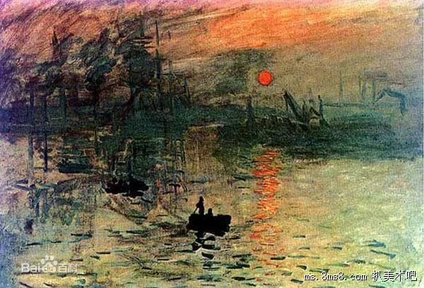

教你如何把握好写生时的光线变化 “光”与“影”是一对好搭档，二者如影随形，即当光线投射到物体上时，所发生的一系列关系。可见，有了光，才有了我们能够感知的物象。在绘画中，如果能够把握好光线这一最重要的元素，那么，几乎可以说，你的作品已经成功了一半。因为光线对于表现写生对象的色彩及形体，至关重要。今天，我们就来简单说说怎样才能够很好地把握写生时的光线问题。
首先，写生对光线的要求是比较严格的，过强、过暗、过分散、过集中都不利于对表现对象的表达，因为这集中情况的明暗关系都过于极端，描绘不出对象丰富的层次。所以，在写生之前，必须将光线尽可能地调节到最佳状态。比如说，一般北窗的光线比较明亮和稳定，受光后，其明暗关系以及形体特征都比较明显，适合作画。
其次，写生时，由于角度不同，对象受光不同，有正面光、侧面光、背光等，我们的视觉感知到的物体也不同。比如，正面光，光照平均，呈现在我们眼前的物体几乎没有层次感可言，尽管轮廓清晰，易于塑造形体，但是无法表现出整体的立体感和层次感；背光就更不用说了，整个物体的色彩灰暗，没有光泽，基本无法掌握其中的细节，想表现立体效果更难。因而，在选择角度时，要注意选择有明暗对比、易于凸显层次感的角度，比如，对象三分之二部分受光，三分之一背光，轮廓清晰、明暗有致、立体感强，表现起来更容易得心应手。 可以说，在美术创作中不缺少美，缺少的是对光线的正确把握和运用。相信如果每一个美术学习者都能够在实践中慢慢熟悉“光线”，逐渐体会“光线”的作用，那么，你的作品也会在未来的创作道路上熠熠发光。